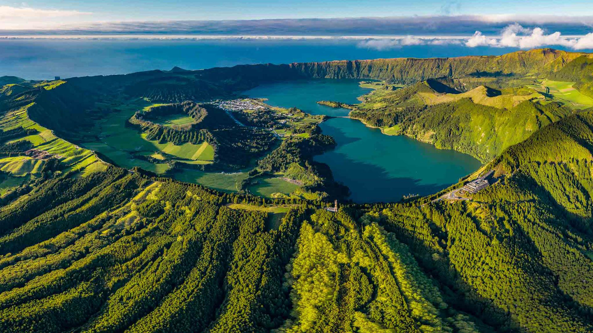
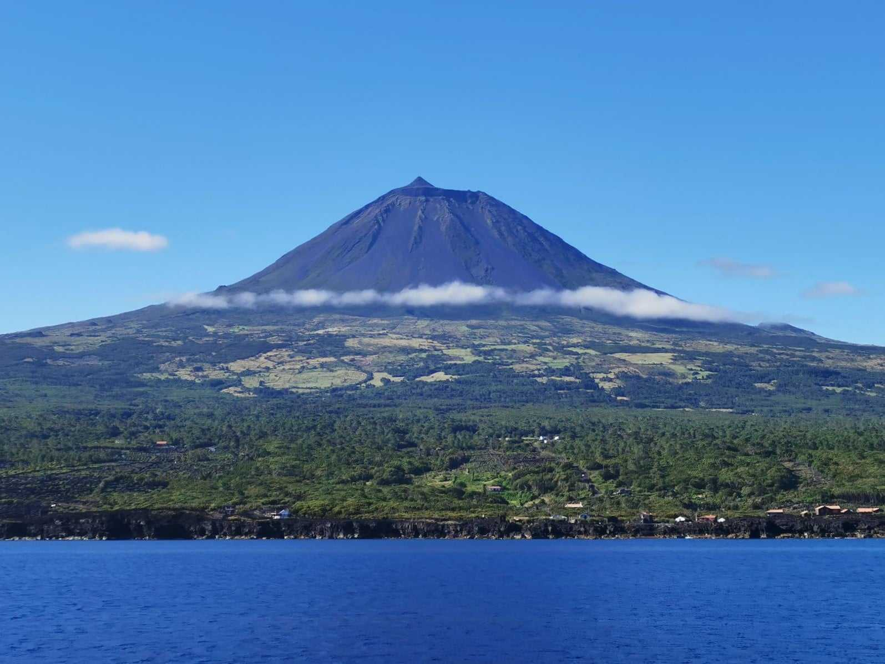
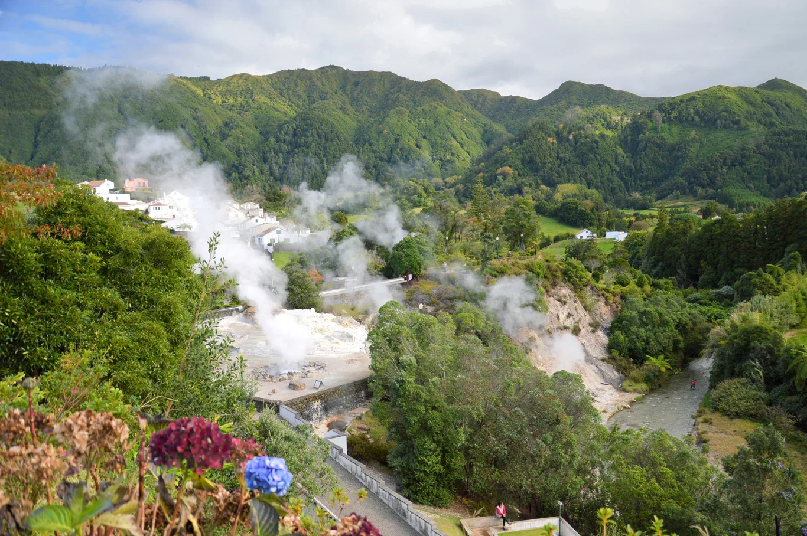
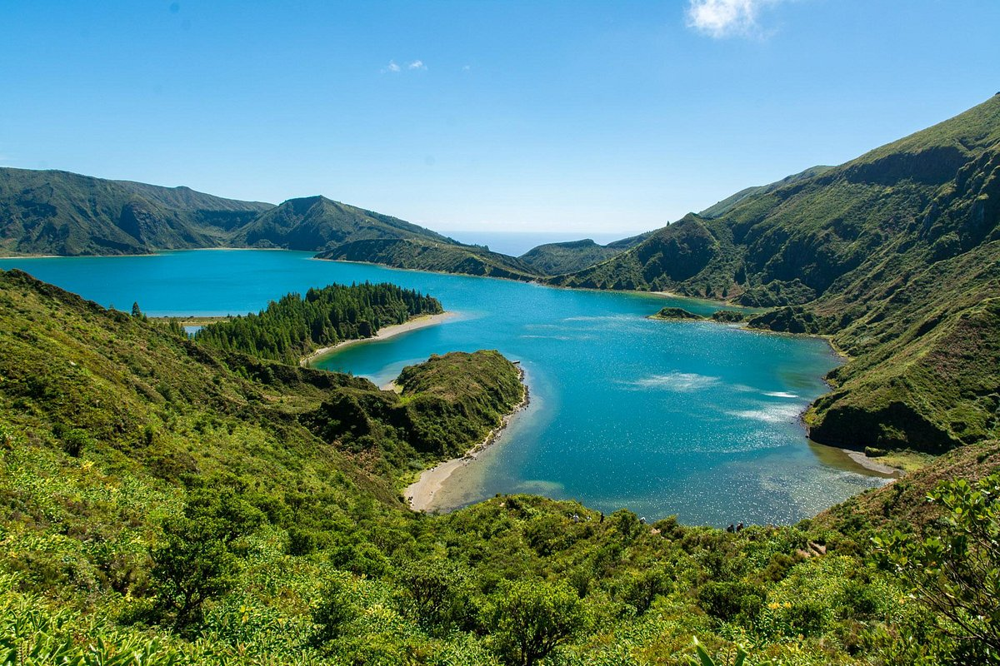
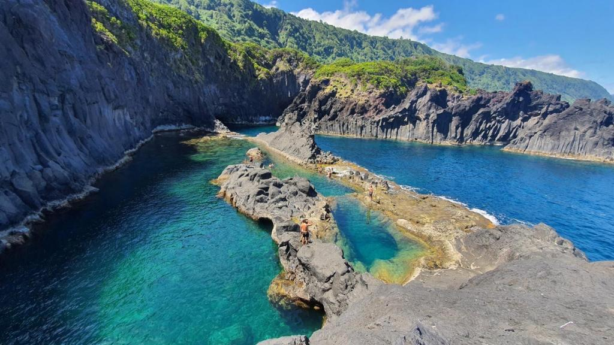
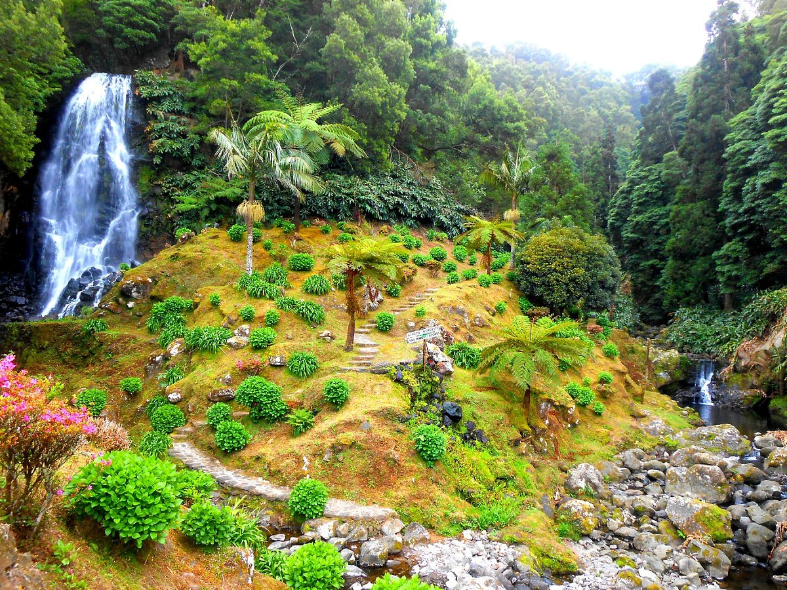
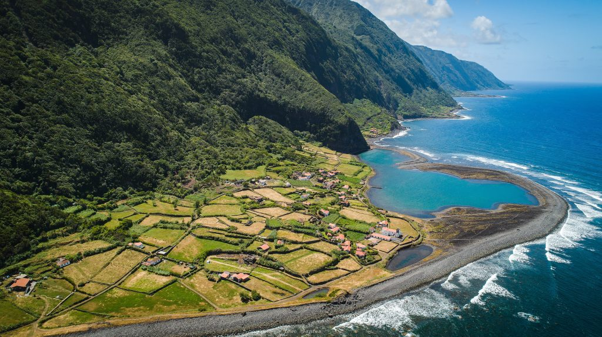
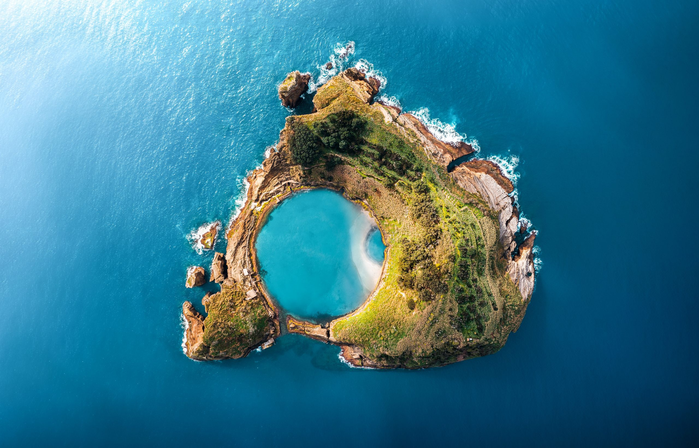
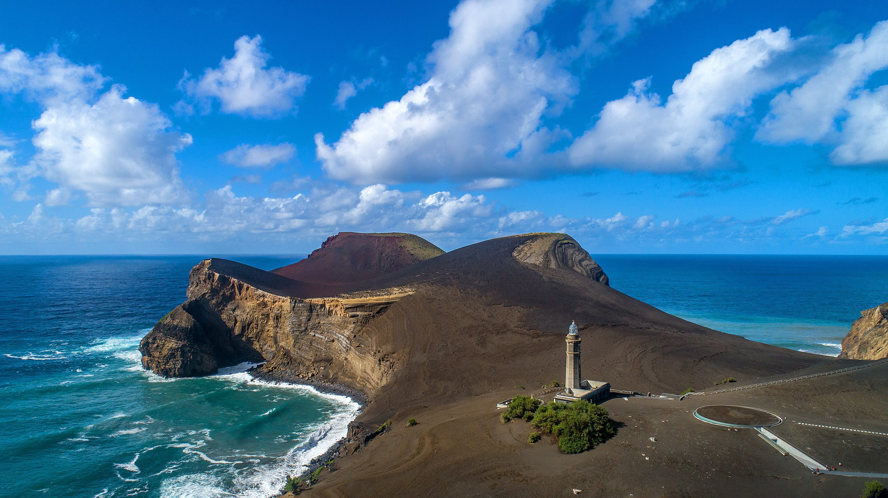

Paisatges de somni que t'estan esperant

Sete Cidades, São Miguel
Dues llacunes bessones, una blava i una verda, dins d'un cràter volcànic a São Miguel.

Montanha do Pico
El pic més alt de Portugal amb 2.351 metres. Una ascensió inoblidable sobre els núvols.

Caldeiras das Furnas
Fonts termals bullents i fumaroles volcàniques en un paisatge únic i surrealista.

Lagoa do Fogo
La llacuna del foc, reserva natural protegida al cor de São Miguel, d'un blau turquesa increïble.

Poça Simão Dias, São Jorge
Piscines naturals d'aigua termal envoltades d'exuberant vegetació subtropical. Un bany únic enmig de la natura de São Jorge.

Parque Natural da Ribeira dos Caldeirões, São Miguel
Un parc natural ple de cascades, molins d'aigua antics i vegetació tropical. Un dels racons més màgics de São Miguel.

Fajã da Caldeira de Santo Cristo, São Jorge
Una plana costanera formada per antics esllavissaments, famosa per les seves llacunes i les millors onades de surf de les Açores.

Ilhéu de Vila Franca do Campo, São Miguel
Un antic cràter volcànic mig submergit que forma una piscina natural circular d'aigües turquesa. Accés només amb barco i places limitades.

Vulcão dos Capelinhos, Faial
L'últim volcà en emergir de l'Atlàntic, el 1957. Un paisatge lunar de cendres i lava que sembla un altre planeta. Imprescindible.
Tot el que necessites saber
Imprescindibles
Els llocs que no us podeu perdre
Itinerari
Dia a dia, illa a illa
Logística
Vols, ferris i cotxes
Allotjament
Cases i hotels
El temps
Previsió meteorològica
Webcams
En directe des de les illes
Restaurants
On menjar bé
Mapes
Tots els llocs del viatge
Despeses
Control de despeses del grup
Blog
Diari del viatge en temps real
Saber-ne més
Curiositats de les Açores
Portuguès
Frases i expressions útils
Jocs
30 jocs per al viatge
Reptes
Desafiaments del grup
Ruleta
Qui ho fa?
+Info
Documents i recursos